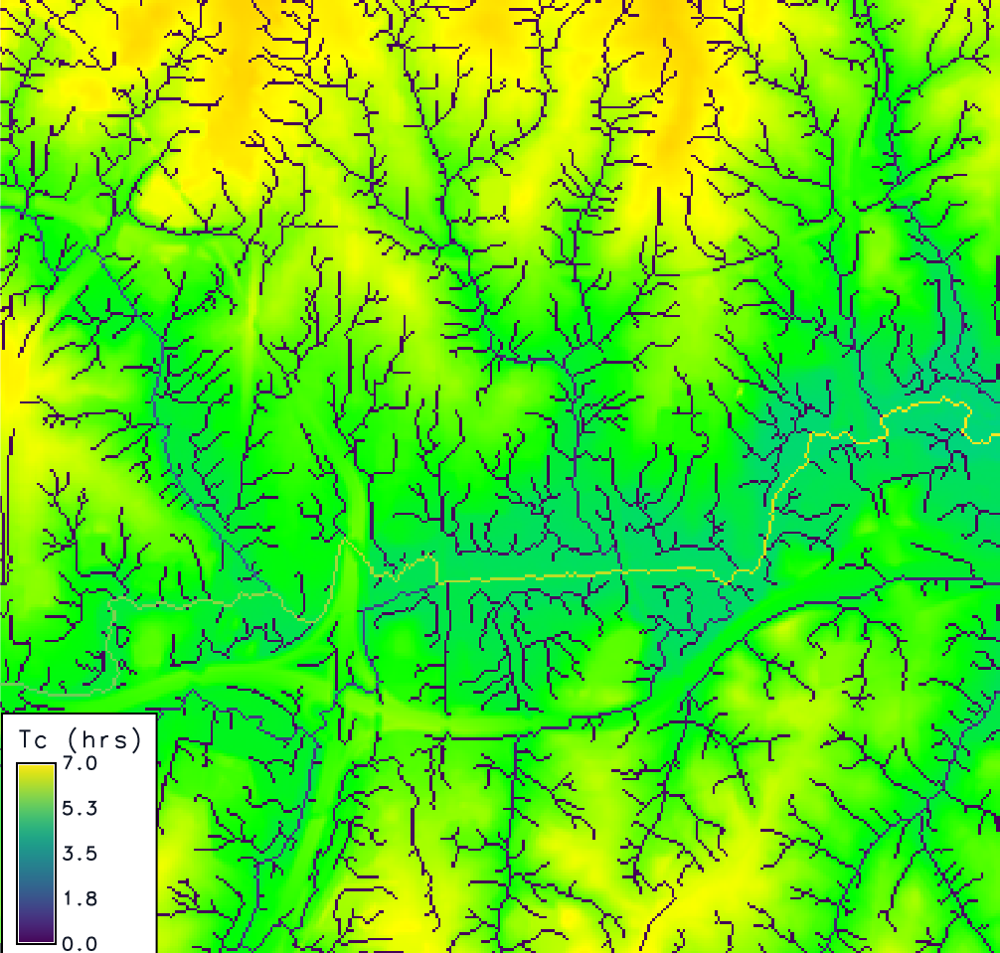

Figure: Output from r.timeofconcentration on NC dataset
r.timeofconcentration generates a raster map of time of concentration (Tc) [h] for each cell, using the Kirpich equation based on the longest upstream flow-path length and path-average slope. This method, rooted in hydrologic practice, estimates how long it takes water to travel from the farthest point in a watershed to a given cell, aiding in runoff and flood analysis. The tool leverages elevation and flow direction data, optionally deriving streams if not provided, and supports diagnostic outputs like flow length and slope. All measurements use metric units [m], [h].
It simplifies water travel time estimation for high-level watershed planning: water flows downhill along paths defined by terrain, and Tc reflects the slowest route’s duration, influenced by distance and slope steepness. This is key for understanding how quickly runoff reaches streams or outlets.
r.watershed or r.stream.extract). Required to trace upstream flow paths; defines the drainage network for accumulation.direction. If not provided, streams are derived using r.watershed with a threshold.streams is omitted (lower value = denser stream network; default inferred from r.watershed).1e-4). Prevents division by zero on flat areas by setting a floor value.10). Ensures Tc is reported only where flow paths are significant.Tc = (K * L^a * S_avg^b) / 60L is upstream flow-path length [m], S_avg is path-average slope [unitless], K = 0.01947, a = 0.77, b = -0.385; result converted from minutes to hours by dividing by 60. Tc is NULL if L < length_min or outlets are undefined.
r.stream.distance.S_avg = max(Δz / L, slope_min), where Δz is the drop and L is the length.r.stream.distance returns lengths in meters, adjusted to the coordinate system.streams is omitted, r.watershed generates it, using threshold to control density.These examples use the North Carolina sample dataset.
# set the region
g.region -p raster=elevation
# calculate positive flow accumulation and drainage directions using r.watershed
r.watershed -sa elevation=elevation drainage=fdr threshold=10
# compute the time of concentration (use same threshold as r.watershed)
r.timeofconcentration elevation=elevation direction=fdr tc=tc_nc threshold=10
# use length_min parameter for coarser tc on important streams only
r.timeofconcentration elevation=elevation direction=fdr tc=tc_nc length_min=100
Figure: Output from r.timeofconcentration on NC dataset

Figure: Output from r.timeofconcentration on NC dataset zoomed near the watershed outlet
Abdullah Azzam, New Mexico State University